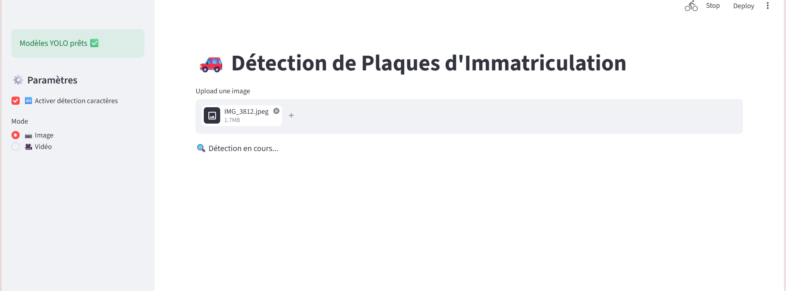
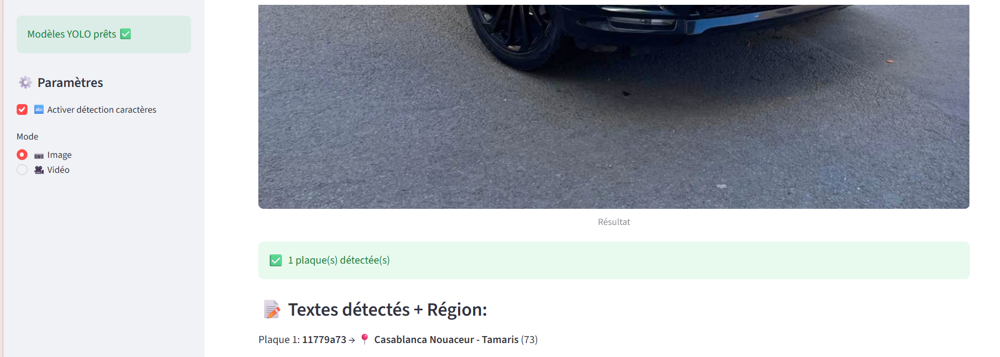
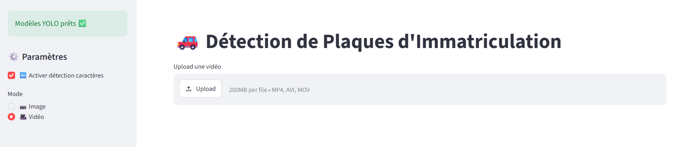
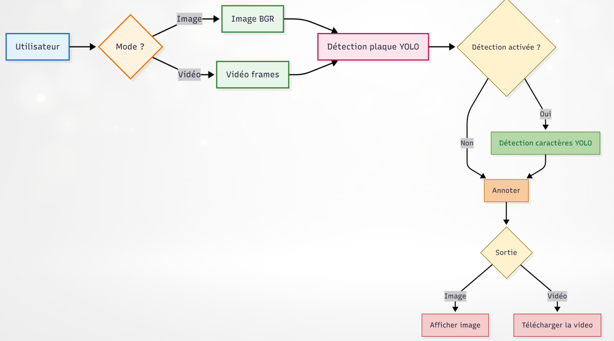

Computer Vision · Projet
Détection et reconnaissance de plaques marocaines
Application capable de détecter automatiquement les plaques d'immatriculation marocaines, d'identifier leurs caractères, de reconstruire le numéro et d'associer le code numérique à la préfecture ou province correspondante.
Du chargement de l'image au résultat
Les étapes de l'application Streamlit à travers des captures réelles.
Interface d'entrée
Sélection du mode image et chargement du fichier à analyser.

Interface d'accueil et paramètres de détection.
Analyse en cours
Le fichier est chargé et l'application lance le traitement.

État de traitement affiché pendant l'analyse.
Résultat : plaque et région reconnues
L'application affiche le nombre de plaques détectées, le texte extrait et la région associée au code administratif.

Exemple réel : une plaque détectée et une région identifiée.
Mode vidéo
L'interface propose également l'import de vidéos MP4, AVI ou MOV.

Sélection du mode vidéo dans l'application.
Le problème
L'objectif est d'automatiser l'analyse d'images ou de vidéos contenant des véhicules afin d'extraire les informations visibles sur leurs plaques d'immatriculation. Le projet combine localisation de la plaque, détection des caractères et interprétation du code administratif marocain.
Pipeline de traitement
Architecture du système

Deux modèles YOLO
- License Plate Detector — localisation des plaques dans l'image.
- Character Detector — détection des caractères présents sur la plaque.
Entraînement
Les modèles ont été entraînés avec Google Colab et un environnement GPU. Deux jeux de données distincts ont été utilisés : un pour les plaques et un pour les caractères. Les modèles entraînés sont ensuite intégrés à l'application.
Application
- Interface Streamlit.
- Traitement d'images.
- Traitement de vidéos et des frames.
- Annotation des résultats avec OpenCV.